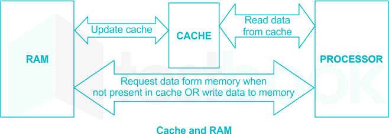
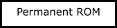
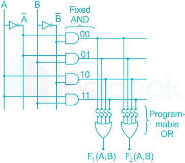
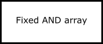
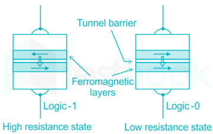

08 Semiconductor Memories
Semiconductor memories
Introduction to memories
A memory is a semiconductor of magnetic device used for storage of digital data.
Computer memory is a device that is used to store data or programs (sequences of
instructions) on a temporary or permanent basis for use in an electronic digital computer. Computers represent information in binary code, written as sequences of 0’s and 1’s.
Each binary digit may be stored by any physical system that can be in either of two stable
states, to represent 0 and 1. Such a system is called bi-stable. Computers do all calculations using a code made of just two numbers; 0 and 1. This
system is called binary code. Bits and bytes are the basic building blocks of memory. "Bit" stands for binary digit.
A bit is a one or a zero, on or off, which is how all computer information is stored. A byte
is made up of eight bits. A nibble (also spelled 'nybble') is 4 bit, half of a byte.
●
Memory size = 2 k ×(no of data lines) bits.
●
●
words .
| Unit of Memory | Abbreviation | Exact Memory Amount |
|---|---|---|
| Binary Digit | Bit, b | 1 or 0 |
| Byte | B | 8 bits |
| Kilobyte | KB or K | 1024 bytes |
| Megabyte | MB | 1024 KB |
| Gigabyte | GB | 1024 MB |
| Terabyte | TB | 1024 GB |
Memory Chips-
The number of address pins is related to the number of memory locations.
The data pins are typically bi-directional in read-write memories. The number of data pins is related to the size of the memory location. The size or the capacity of each memory chip is specified by (M×N).
Where, M specifies the number of locations available in the memory N specifies the number of bits that can be stored in each memory location
For 'N-Bits' address pins, the number of locations that will accommodate is 2 N.
●
Cache Memory-
Cache Memory is a special very high-speed memory .
Cache memory is costlier than main memory or disk memory but economical than CPU
registers.
Cache memory is an extremely fast memory type that acts as a buffer between RAM and
●
the CPU.
It holds frequently requested data and instructions so that they are immediately available
to the CPU when needed.
Cache memory is used to reduce the average time to access data from the Main
●
memory .
Cache memory is slightly different from RAM as it can’t store huge files.
●
Auxiliary Memory-
Auxiliary memory is
the non-volatile memory lowest-cost , highest-capacity, and
●
slowest-access storage in a computer system.
It is where programs and data kept for long-term storage or when not in immediate
●
use .
It used as permanent storage of data in mainframes and supercomputers.
●
Virtual Memory -
A computer can address more memory than the amount physically installed on the
system. This extra memory is actually called virtual memory.
It allows us to extend the use of physical memory by using the disk.
Second, it allows us to have memory protection because each virtual address is translated
to a physical address.

Access time is the time required to access a memory location for reading or writing
operation. Random access is the time which is independent of the position of memory location
Memory word is a group of bits in a memory which represents instructions or data of same
type A memory in which the location can be accessed in a sequence only is referred to as
sequential memory e.g., magnetic tape, magnetic bubble etc...
Read operation is often called a Fetch operation.
●
location.
Read/Write Memory (RAM)
RAM stands for Random Access Memory .
Random-access memory is a form of computer memory that can be read and changed in
any order, typically used to store working data and machine code. A random-access memory device allows data items to be read or written in almost the
same amount of time irrespective of the physical location of data inside the memory. In contrast, with other direct-access data storage media such as hard disks, CD-RWs,
DVD-RWs, and the older magnetic tapes. Read-only memory is a type of non-volatile memory used in computers and other
electronic devices.

The two widely used forms of modern RAM are static RAM (SRAM) and dynamic RAM
(DRAM).

In SRAM, a bit of data is stored using the state of a six-transistor memory cell.
The SRAM memories consist of circuits capable of retaining the stored information as long
as the power is applied i.e. it requires constant power. SRAM memories are used to build cache memory.
It can retain stored data indefinitely and it can be implemented as a flip flop circuit to
store one bit of information.
DRAM stores a bit of data using a transistor and capacitor pair.
●
DRAM stores the binary information in the form of electric charges that applied to
capacitors. The stored information on the capacitors tends to lose over a period of time and thus the capacitors must be periodically recharged to retain their users. The main memory is generally made up of DRAM chips. Both read and write operations cannot be performed simultaneously.
●
The difference between SRAM and DRAM-
| SRAM | DRAM |
|---|---|
| Faster access speed | Slower access speed |
| Used for CPU cache | Used for computer main memory |
| Lower density on a chip | Higher density on a chip |
| More expensive | Less expensive |
| Complex circuitry design | Not as complex as SRAM |
| More power dissipation | Lower power dissipation |
| Refreshing is not required | Continuous refreshing is required |
| Only transistors are needed to store data | To store data transistor & capacitor are required |
| Cache memory is build up from SRAM chips | Main memory is build up from DRAM chips |
ROM
ROM is a semiconductor memory that is designed to hold data either permanently or do not
change frequently. During normal operation, no new data can be written into RAM, but data can be read from
ROM ROM is a Non-volatile memory.
Non-volatile memory, NVM or non-volatile storage is a type of computer memory that can
retrieve stored information even after having been power cycled (turned off and back on). Whereas Volatile memory is the memory that cannot be retrieved after having been power
cycled. It is constructed by diodes, bipolar cells or MOSFETs.
Examples of non-volatile memory include Read-Only Memory (ROM), flash memory, ferroelectric RAM, most types of magnetic computer storage devices (e.g. hard disk drives, floppy disks, and magnetic tape), optical discs, and early computer storage methods such as paper tape and punched cards. ROM contains a decoder followed by OR gates.
●
Boolean function implementation using ROM –
A 2 k ×n ROM contains a k×2 n decoder followed by n OR gates
� The k×2 n decoder generates all the 2 k possible min-terms for k input variables
� � The n OR gates can implement n Boolean functions of k variables each
Classifications of ROM’s





PROM Masked ROM EPROM EEPROM Flash memory
PROM –
It is known as programmable read-only memory.
A PROM has a fixed AND array but a programmable OR array. it is difficult to manufacture
and program. When the AND array is fixed that means we can only get certain min-terms. As OR can be
programmable, we can combine them in whatever combinations we like. A programmable ROM is also referred to as a FPROM (field programmable read-only memory)
or OTP (one-time programmable) chip. So not all but a few logic functions can be implemented
It is known as programmable read-only memory It includes both AND array & OR array Out of these two arrays AND array is fixed and OR array is programmable.
A variation of the PROM is an EPROM, which is a PROM that can be erased and reprogrammed
without being replaced.
Uses – They have several different applications, including cell phones, video game consoles,
RFID tags, medical devices, and other electronics.

Masked ROM -
In this type of ROM, the specification of the ROM (its contents and their location), is taken by
the manufacturer from the customer in tabular form in a specified format and then makes corresponding masks for the paths to produce the desired output. This is costly, as the vendor charges special fee from the customer for making a particular
ROM (recommended, only if large quantity of the same ROM is required).
Uses – They are used in network operating systems, server operating systems, storing of fonts
for laser printers, sound data in electronic musical instruments.
EPROM –
EPROM is an erasable programmable read-only memory.
It is a non-volatile memory that means its data will be retained even when the power is
turned off. EEPROM (electrically erasable programmable read-only memory) is a user-modifiable read-only memory (ROM) that can be erased and reprogrammed (written to) repeatedly through the application of higher than normal electrical voltage. Data in ROM can be accessed randomly and hence EPROM and EEPROM are random access
memory. To erase data in EPROM, 15-20 min are required.
EPROM is also called UV-ROM.
Programming is done by electric signals and erasing is through ultra-violet rays.
●
Uses – Before the advent of EEPROMs, some micro-controllers, like some versions of Intel
8048, the Freescale 68HC11 used EPROM to store their program.
EEPROM –
EEPROM stands for Electrically Erasable Programmable Read-Only Memory.
It is a non-volatile memory in which the information stored Is retained even after the power
goes off. A special type of PROM in which the information stored in it can be erased by exposing it to
an electrical charge at one byte at a time. EEPROM generally offers excellent capabilities and performance.
EEPROMs are constructed as arrays of floating-gate transistors.
EEPROM is also known as EAROM or Flash-ROM or NOVRAM.
●
Uses – It is used for storing the computer system BIOS.
Flash ROM –
It is an enhanced version of EEPROM.
The difference between EEPROM and Flash ROM is that in EEPROM, only 1 byte of data can be
deleted or written at a particular time, whereas, in flash memory, blocks of data (usually 512 bytes) can be deleted or written at a particular time. So, Flash ROM is much faster than EEPROM. Flash memory is a non-volatile memory chip used for storage and for transferring data
between a personal computer (PC) and digital devices. It can be electronically reprogrammed and erased.
It is often found in USB flash drives, MP3 players, digital cameras and solid-state drives.
●
Uses – Many modern PCs have their BIOS stored on a flash memory chip, called as flash BIOS
and they are also used in modems as well.
NOVRAM (Non-Volatile Random Access Memory) -
It is a type of memory that retains its contents when power is turned off.
One type of NOVRAM is SRAM that is made non-volatile by connecting it to a constant power
source such as a battery. Another type of NVRAM uses EEPROM chips to save its contents when power is turned off. In
this case, NVRAM is composed of a combination of SRAM and EEPROM chips.

PLD’s (Programmable Logic Devices) are the circuits that contain an array of AND gates and
another array of OR gates. These are LSI devices and are classified as- (i) PROM (ii) PAL (iii) PLA A combinational PLD is an IC with programmable gates divided into AND array and OR array
to provide AND-OR or SOP realization of a particular Boolean expression.



| PROM | PLA | PAL |
|---|---|---|
| AND array is fixed & OR array is programmable | Both AND and OR arrays are programmable | OR array is fixed and AND array is programmable |
| Cheaper and simple to use | Costlier and complex than PAL and PROM | Cheaper and simpler |
| Only Boolean functions in standard SOP form can be implemented | Any Boolean function in SOP form can be implemented | Any Boolean function in SOP form can be implemented |
| All minterms are decoded and it is generally fusible links | AND array can be programmable to get desired minterm | AND array can be programmable to get desired minterm |
It stores the data in magnetic form instead of electric charges.
It uses far less power than other RAMs so it is good for portable devices.
Magnetoresistance is the tendency of a material (often ferromagnetic) to change the value of
its electrical resistance in an externally-applied magnetic field. On account of the rising demand for fast, scalable, low power consuming, and non-volatile
memory devices, especially in the automotive, enterprise storage, and aerospace and defense sectors, the global market for magneto resistive RAM (MRAM) is likely to gain significant impetus over the forthcoming years.

| Volatile Memory | Non-volatile Memory |
|---|---|
| The data present in volatile memory is not permanent. | The data present in non-volatile memory is permanent. |
| The data is present till the power supply is present. | The data remains present even after the power supply is not present. |
| It is used to store computer programs and data that the CPU needs in real-time. | Non-volatile memory is static and remains stored permanently. |
| RAM and Cache Memory are volatile memory. | ROM, HDD, Magnetic memory, Flash Memory are non-volatile memory. |
| Volatile memory is faster than non-volatile memory. | Non-volatile memory is slower than volatile memory. |
| It has less storage capacity. | It has a very high storage capacity. |
| Volatile memory is costly per unit size. | Non-volatile memory is cheaper per unit size. |